仏経山は私有地なのかな。
2022/05/02
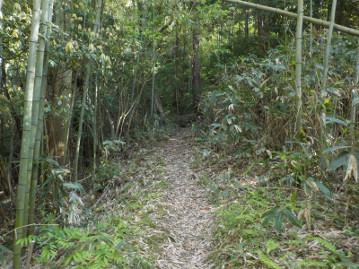
ちょっと薄暗い山道を登ります。
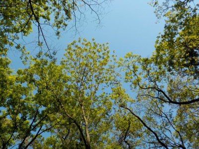
今日は快晴なので見上げればとっても明るい。
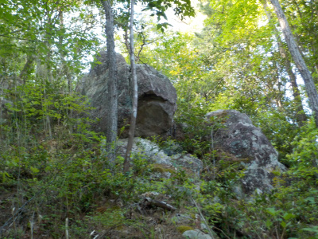
仏経山と言えば大きな岩です。岩の多い山ですが、名前があるものはきっと何かいわれがあるんでしょうね。
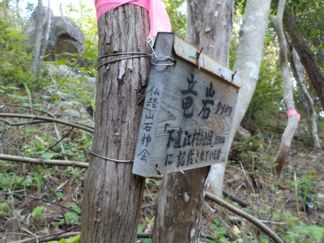
仏経山石神会の方が案内板を設置されています。親切ですね。
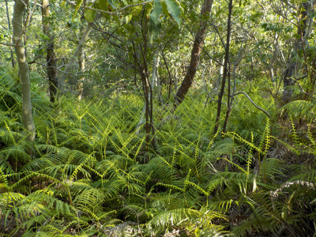
シダがこれから葉を広げるところです。Vサインが沢山です。
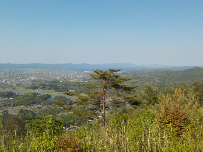
展望広場からの景色です。この方角は宍道湖と松江が見えます。
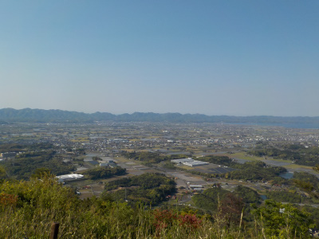
斐川町の平野です。
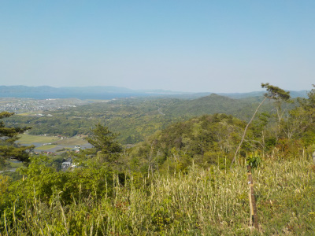
宍道に向かう山陰高速道らへんです。平野部よりも新緑の多い山の方が綺麗に見えました。
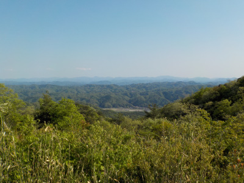
仏経山の南の山々です。こちらの景色も素晴らしいです。
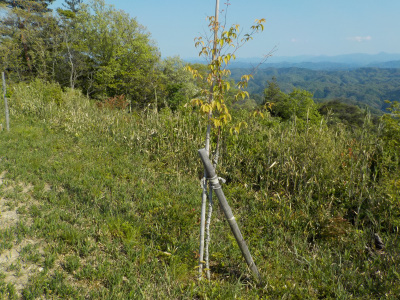
何故か桜の木が何本か植樹してありました。山頂は風が強く木は育たないと思っていたんですがどうでしょう？きっと考慮した上でのことでしょうね。
自然を求めて山に来ているのに園芸品種の桜があるのは個人的には複雑です。地元的には一般的な公園と同じ感覚かもしれないですね。
後、実はここは私有地で所有者の方が好きな木を植えられた可能性もありますね。
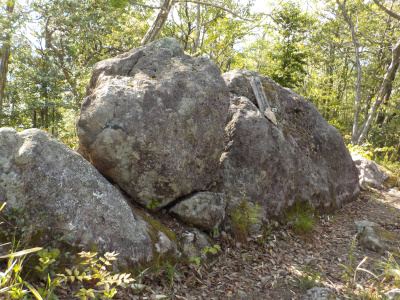
展望台から山頂へ向かう途中の岩です。以前は黒いロープが付いていましたが、今日はありませんでした。
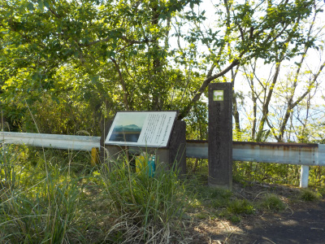
電波塔近くの説明板です。ここは以前と変わっていないな。
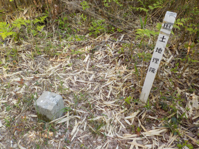
電波塔から上に登ったところに山頂があります。赤いテーブをたどって行ったら到着しました。
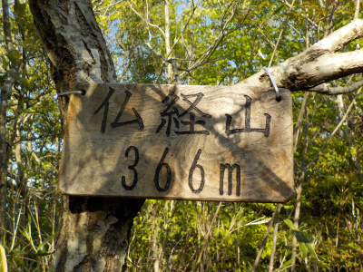
こちらの看板は石神会の方と違う字体なので別の方かな。
山に登ると親切な案内が多くあって助かります。
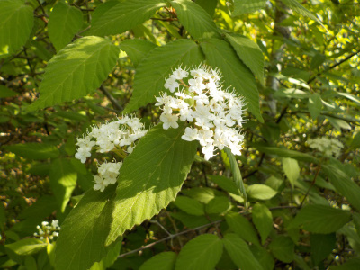
今日一番見頃だと思った花はガマズミでした。
仏経山に登りました。
2017/06/18
斐川町の仏経山です。
駐車場の場所です。
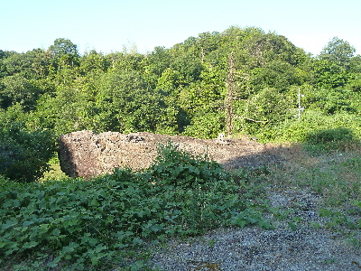
駐車場のすぐ近くに船石というのがありました。名前通りの大きい船のような石です。
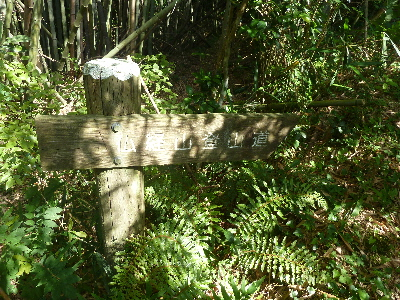
登山道を登ります。
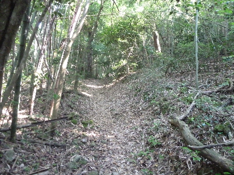
階段とか整備されていない普通の山道です。
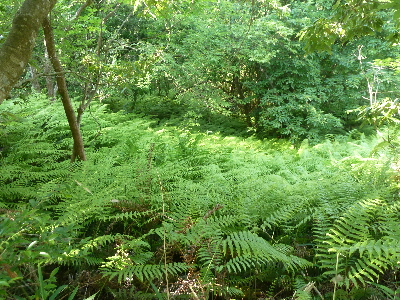
シダが密集して育ってて、緑がとっても綺麗でした。
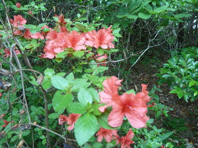
あちこちでサツキの咲いてました。
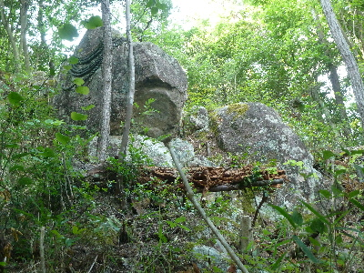
竜岩です。
何かは分かりませんでした。
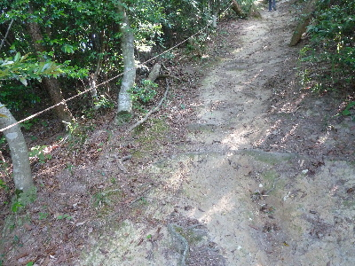
ちょっと急な坂ではロープが張ってありました。下りでは利用させてもらいました。
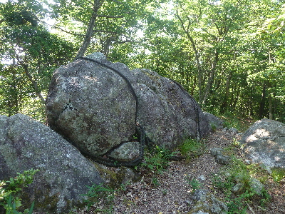
鏡岩です。他にも大きな石があると掲示がありました。
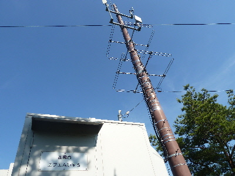
FMいずもの建物がありました。ここからFMが出てるのかな？
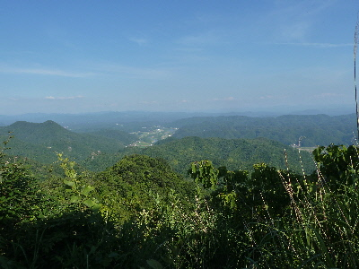
FMいずもの裏からの眺めです。
雲南市方面ですかね。山並みが続く眺めもいいですね。
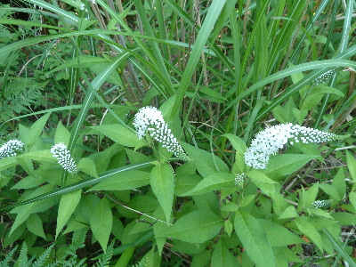
オカトラノオって名前の花が道の脇で咲いてました。綺麗ですね。
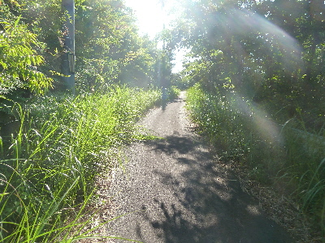
ずっと山道だったんですが、電波塔に向かう道はしっかり舗装されています。
舗装されて道を歩くのって、山登り気分じゃなくなりますね。ふつうに散歩です。
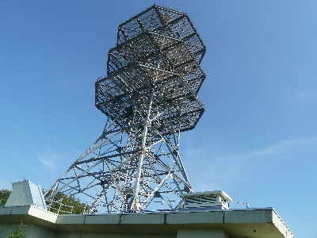
電波塔到着です。ここらへんが山頂ですかね。
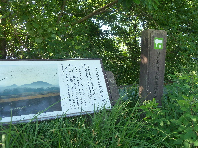
電波塔傍に仏経山（神名火山）の説明プレートがありました。
昔はここからの景色が良かったのかな？
今は木が茂ってて出雲平野は少ししか見れませんでした。
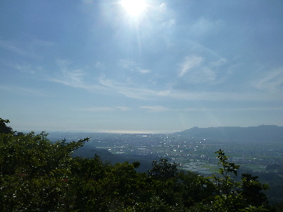
仏経山の反射板脇からの眺めです。
ここの眺めが一番いいかな。
大社湾まで見えますね。
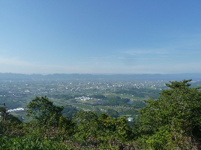
展望台からの眺めは斐川町が見渡せました。
仏経山は展望台の山、FMいずものアンテナの山、電波塔の山とで別れてて、ちょっと複雑ですね。
立派なプレートが何個かあったんですが、そうゆう説明が1つでもあればいいのにって思いました。
（見落としたのかな？）